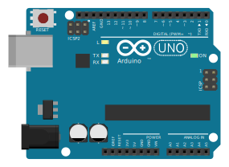
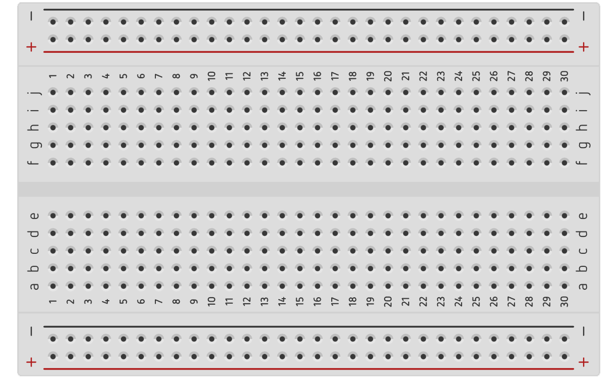
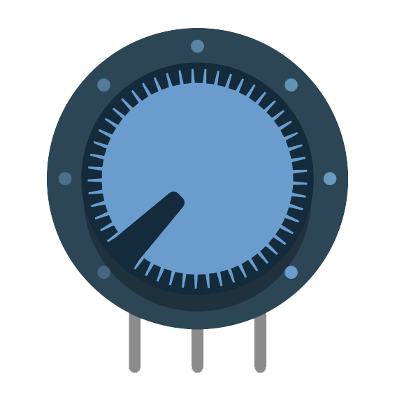
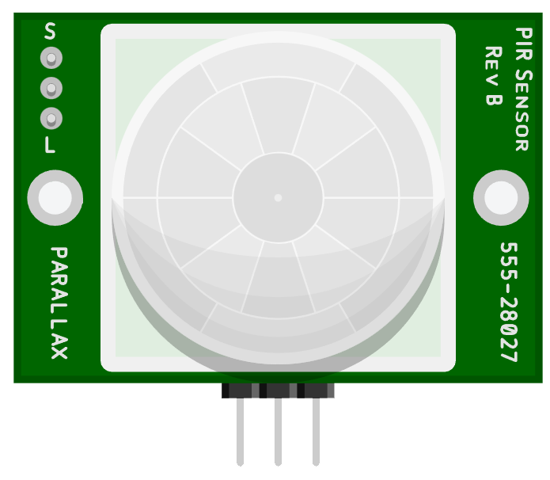
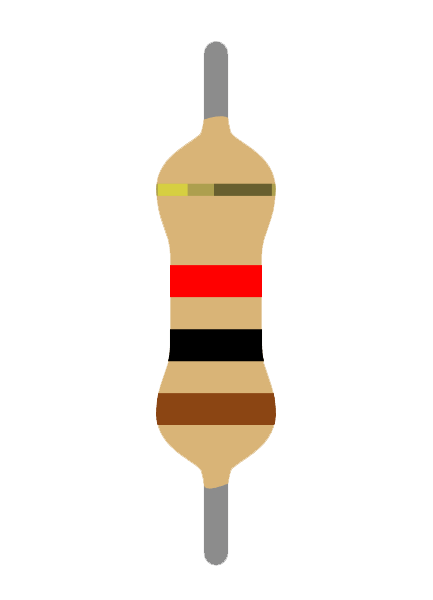
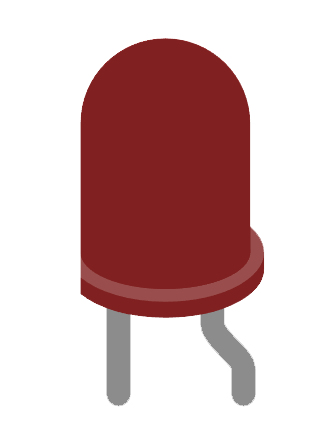
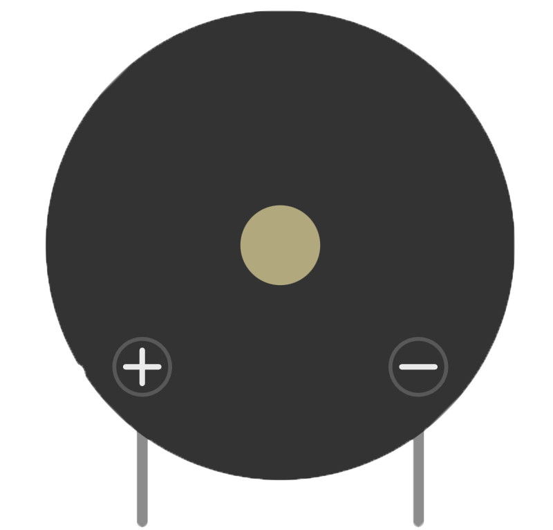
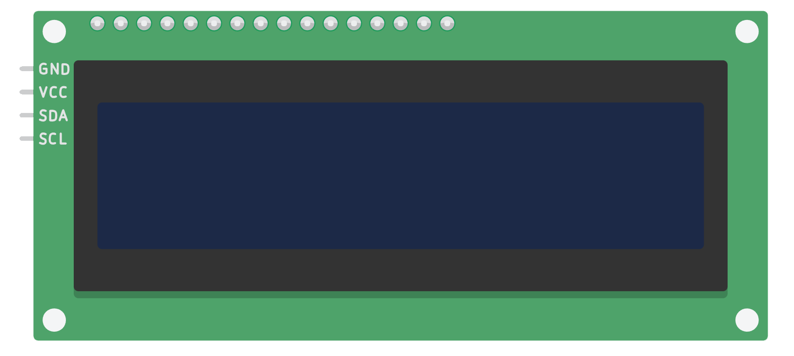

kRDM
Détecteur de mouvement
composants
L'Arduino Uno est une carte de microcontrôleur populaire largement utilisée dans les projets d'électronique et de prototypage. Elle est basée sur le microcontrôleur ATmega328P d'Atmel et dispose d'un ensemble de broches d'entrée/sortie numériques et analogiques, ainsi que de diverses autres fonctionnalités.


Une plaque d'essai, également connue sous le nom de breadboard en anglais, est un outil couramment utilisé en électronique pour prototyper et expérimenter avec des circuits électroniques. Elle fournit un moyen pratique de connecter et de tester rapidement des composants électroniques sans nécessiter de soudure.
Un potentiomètre est un composant électronique utilisé pour régler et contrôler la résistance électrique dans un circuit. Il est souvent utilisé pour ajuster la luminosité, le volume sonore, la vitesse d'un moteur, ou toute autre variable réglable dans un dispositif électronique.


Un capteur infrarouge est un dispositif électronique conçu pour détecter et mesurer les rayonnements infrarouges présents dans l'environnement. Les rayonnements infrarouges sont des ondes électromagnétiques dont la longueur d'onde est supérieure à celle de la lumière visible, ce qui signifie qu'ils ne sont pas visibles à l'œil humain.
La résistance est un composant passif couramment utilisé pour contrôler le courant électrique dans un circuit.


Une LED (Light Emitting Diode) est un composant électronique qui émet de la lumière lorsqu'un courant électrique le traverse dans la direction correcte. Les LED sont largement utilisées dans de nombreux appareils et applications, notamment l'éclairage, les affichages, les indicateurs lumineux, les panneaux publicitaires, etc.
Un élément piézoélectrique, également connu sous le nom de transducteur piézoélectrique, est un composant électronique qui convertit l'énergie électrique en énergie mécanique (ou vice versa) grâce à l'effet piézoélectrique. Cet effet se produit dans certains matériaux qui peuvent générer une charge électrique en réponse à une contrainte mécanique, ou générer une déformation mécanique en réponse à un signal électrique.


Un écran LCD 16x2 est un affichage à cristaux liquides (LCD) qui peut afficher jusqu'à 16 caractères sur 2 lignes. C'est l'un des types d'écrans les plus couramment utilisés dans les projets électroniques et les dispositifs de contrôle.
Vidéo explicative de la construction du circuit avec le code.
© 2023 Groupe kRDM. Tous droits réservés.